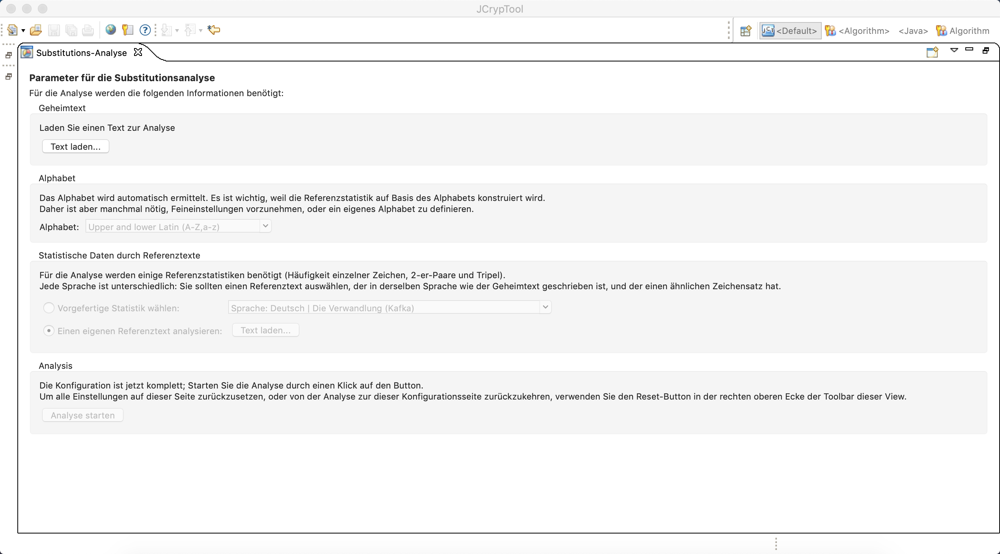
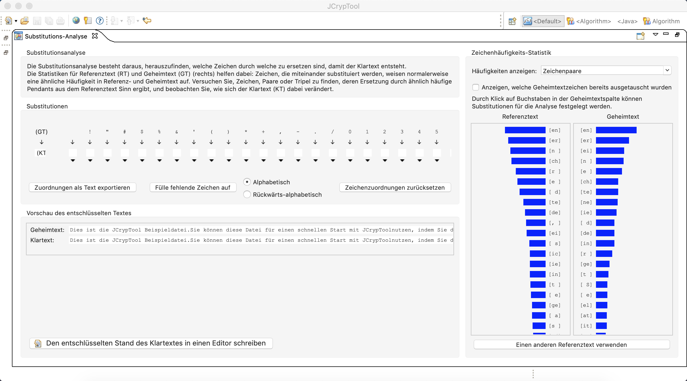

Substitution ist eine Verschlüsselungsmethode, bei welcher der Klartext verschlüsselt wird in dem Zeichen ersetzt werden. Das Resultat ist der Geheimtext. Hier können einzelne Zeichen, Zeichenpaare, längere N-Gramme oder eine Mischung verwendet werden. Um den Text zu entschlüsseln wird die Substitution der Zeichen in umgekehrter Reihenfolge durchgeführt.
Die Substitutionsanalyse versucht herauszufinden welche Zeichenkette zu ersetzten ist, um den Klartext zu produzieren. Dafür werden Statistiken eines Referenztextes und des Geheimtextes verwendet, da ersetzte Zeichenketten oft mit der gleichen Frequenz auftauchen. Statistiken über den Referenztext werden hier mit dem des Geheimtextes verglichen. Der Referenztext sollte dafür ein Text in der gleichen Sprache mit dem gleichen Alphabet sein, um die korrekte Frequenz von Zeichenketten zu ermitteln.
Mit dem Substitutionsanalyse Plug-In kann ein Geheimtext geladen werden und die Frequenzen von Zeichenketten im Referenz- und Geheimtext analysiert werden. Verschiedene Substitutionen können ausprobiert werden für welche der resultierende Klartext ausgegeben wird.
Als erstes Muss ein Geheimtext zur Analyse geladen werden. Das Alphabet wird dann automatisch ermittelt, kann aber verfeinert werden um Feinstellungen vorzunehmen. Dies ist wichtig da die Referenzstatistik auf Basis des Alphabets ermittelt wird. Danach kann ein beliebiger Referenztext geladen werden oder eine vorgefertigte Statistik verwendet werden. Jetzt kann die Analyse starten.

Ein neues Fenster erscheint. Das Feld auf der rechten Seite zeigt die Zeichenhäufigkeits-Statistik. über die Dropdown-Liste kann die Länge der Zeichenkette variiert werden. Mit Hilfe des Buttons im unteren Bereich des Panels kann ein neuer Referenztext geladen werden. Die Substitution kann festgelegt werden, in dem man auf die Buchstaben in der Geheimtextspalte drückt. Dies kann auch durch die Tabelle im Feld „Substitutionen“ festgelegt werden.
Im Feld „Substitutionen“ können verschiedene Option ausgewählt werden um die Substitution zu vervollständigen. Zum Beispiel kann über den Button „Fühle fehlende Zeichen auf“ und die dazugehörigen Radiobuttons die Substitution automatisch ausgefüllt werden. Mithilfe der jeweiligen Buttons kann die Substitution auch exportiert oder zurückgesetzt werden.
Die Substitution kann gleichzeitig im Feld „Vorschau des entschlüsselten Textes“ nachverfolgt werden. Hier werden der Geheimtext und der resultierende Klartext für die momentane Substitution ausgegeben. Optional kann der Klartext mithilfe des unteren Buttons in einen Editor exportiert werden.
